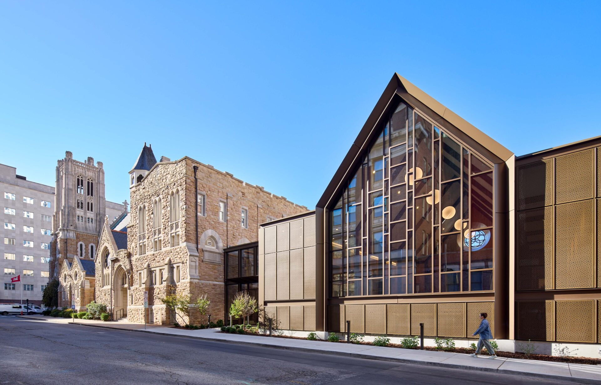
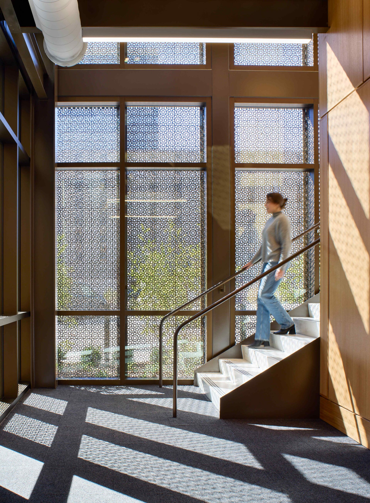
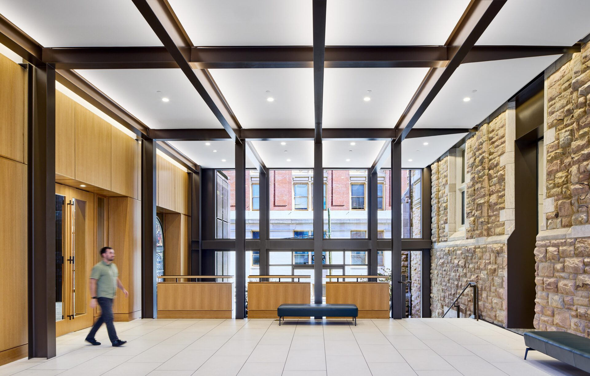

Architecture / Renovation & Addition
Christ Church Cathedral
Nashville, Tennessee

- Practice
- EOA Architects, PLLC
- Team
- 8 people
- My role
- Architect; lead for custom waterjet-cut panel design and fabrication. Contributions across design phases, client coordination, and consultant management.
A new gathering place within a historic fabric
The renovation and addition to Christ Church Cathedral brings new gathering, worship, and outreach spaces to a historic Gothic church in downtown Nashville. The design connects old and new while preserving the character of the cathedral's stonework and stained glass.
The addition takes its proportions and material cues from the existing building. Contemporary metalwork and glazing give it a lighter expression, creating a welcoming presence along the street.


Detail / Light & Material
The cathedral as a lantern
Custom waterjet-cut panels translate the cathedral's ornamental character into a contemporary screen. Their intricate patterns filter daylight and allow the addition to glow at night.
I led the design and fabrication of these customized panels, connecting the architectural intent with the physical detail.

Connecting old and new
The connection to the original cathedral required careful work around historic stained-glass openings and masonry. The design repurposes window openings as portals between the existing church and the addition, making the transition part of the spatial experience.